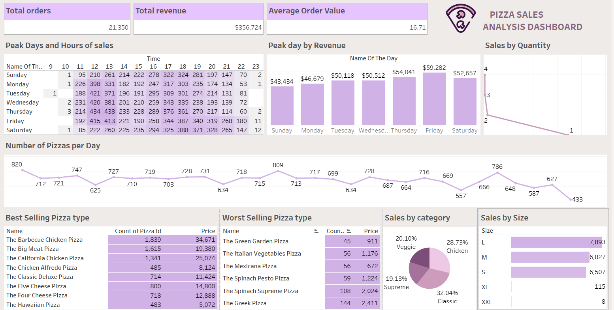

Objective: Analyze pizza sales data using Tableau to gain insights into sales patterns, peak times, and product performance.
Key Components:
Results: Created a dynamic and interactive dashboard that provides valuable insights into pizza sales patterns, helping to make informed business decisions.
Impact: Provided a powerful tool for analyzing sales data and identifying key trends and patterns. Demonstrated proficiency in Tableau for data visualization.
Future Enhancements: Incorporate more advanced analytics features and predictive models. Enhance dashboard design for better user experience.
